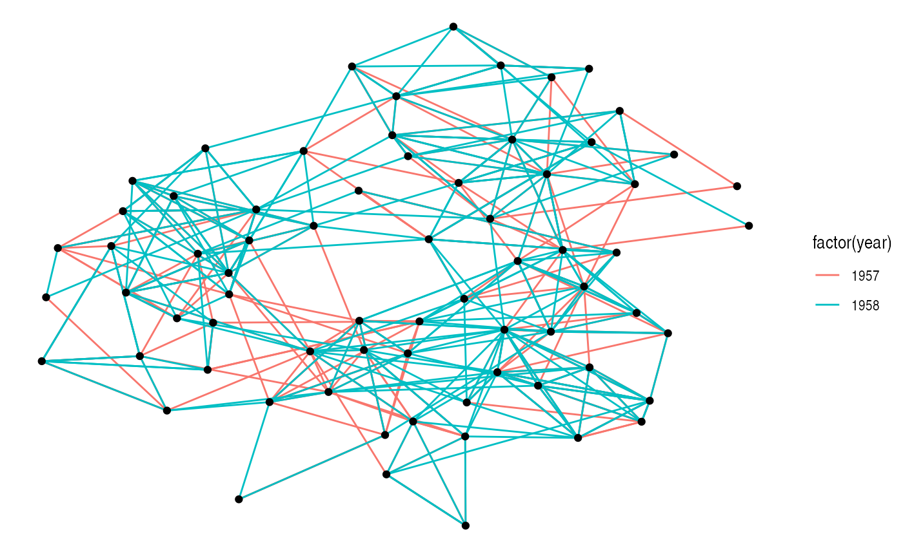
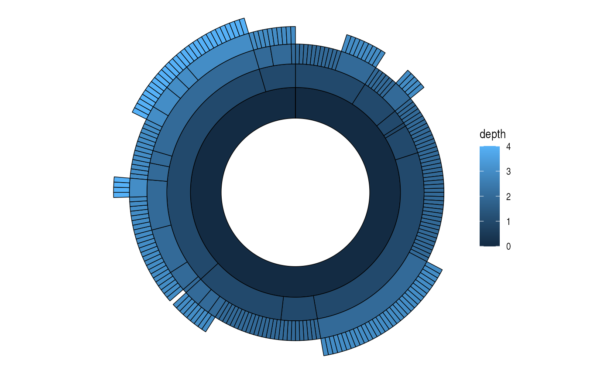
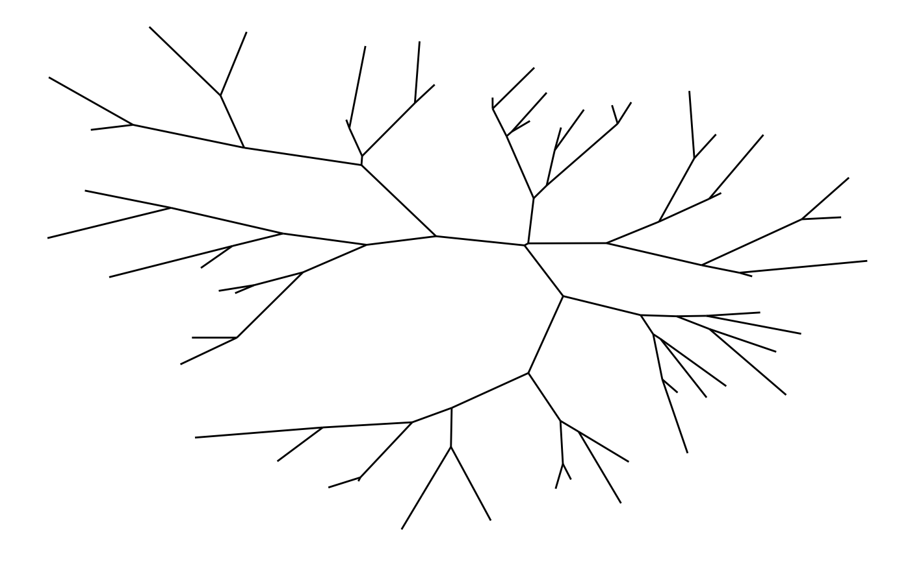

In very short terms, a layout is the vertical and horizontal placement of nodes when plotting a particular graph structure. Conversely, a layout algorithm is an algorithm that takes in a graph structure (and potentially some additional parameters) and return the vertical and horizontal position of the nodes. Often, when people think of network visualizations, they think of node-edge diagrams where strongly connected nodes are attempted to be plotted in close proximity. Layouts can be a lot of other things too though — e.g. hive plots and treemaps. One of the driving factors behind ggraph has been to develop an API where any type of visual representation of graph structures is supported. In order to achieve this we first need a flexible way of defining the layout…
The ggraph() and create_layout() functions
As the layout is a global specification of the spatial position of the nodes it spans all layers in the plot and should thus be defined outside of calls to geoms or stats. In ggraph it is often done as part of the plot initialization using ggraph() — a function equivalent in intent to ggplot(). As a minimum ggraph() must be passed a graph object supported by ggraph:
library(ggraph)
library(tidygraph)
set_graph_style(plot_margin = margin(1,1,1,1))
graph <- as_tbl_graph(highschool)
# Not specifying the layout - defaults to "auto"
ggraph(graph) +
geom_edge_link(aes(colour = factor(year))) +
geom_node_point()
Not specifying a layout will make ggraph pick one for you. This is only intended to get quickly up and running. The choice of layout should be deliberate on the part of the user as it will have a great effect on what the end result will communicate. From now on all calls to ggraph() will contain a specification of the layout:

If the layout algorithm accepts additional parameters (most do), they can be supplied in the call to ggraph() as well:
ggraph(graph, layout = 'kk', maxiter = 100) +
geom_edge_link(aes(colour = factor(year))) +
geom_node_point()
If any layout parameters refers to node or edge variables they must be supplied as unquoted expression (like inside aes() and tidyverse verbs)
In addition to specifying the layout during plot creation it can also happen separately using create_layout(). This function takes the same arguments as ggraph() but returns a layout_ggraph object that can later be used in place of a graph structure in ggraph call:
## Warning in layout_with_eigen(graph, type = type, ev = eigenvector): g is
## directed. undirected version is used for the layout.
Examining the return of create_layout() we see that it is really just a data.frame of node positions and (possible) attributes. Furthermore the original graph object along with other relevant information is passed along as attributes:
## x y circular name .ggraph.orig_index .ggraph.index
## 1 -0.04317633 -0.15611549 FALSE 1 1 1
## 2 -0.03414457 -0.20843892 FALSE 2 2 2
## 3 -0.04963286 -0.30081095 FALSE 3 3 3
## 4 0.18211675 0.03597610 FALSE 4 4 4
## 5 0.18048193 -0.01111635 FALSE 5 5 5
## 6 0.01389960 -0.19521616 FALSE 6 6 6## $names
## [1] "x" "y" "circular"
## [4] "name" ".ggraph.orig_index" ".ggraph.index"
##
## $row.names
## [1] 1 2 3 4 5 6 7 8 9 10 11 12 13 14 15 16 17 18 19 20 21 22 23
## [24] 24 25 26 27 28 29 30 31 32 33 34 35 36 37 38 39 40 41 42 43 44 45 46
## [47] 47 48 49 50 51 52 53 54 55 56 57 58 59 60 61 62 63 64 65 66 67 68 69
## [70] 70
##
## $class
## [1] "layout_tbl_graph" "layout_ggraph" "data.frame"
##
## $graph
## # A tbl_graph: 70 nodes and 506 edges
## #
## # A directed multigraph with 1 component
## #
## # Node Data: 70 x 2 (active)
## name .ggraph.orig_index
## <chr> <int>
## 1 1 1
## 2 2 2
## 3 3 3
## 4 4 4
## 5 5 5
## 6 6 6
## # … with 64 more rows
## #
## # Edge Data: 506 x 3
## from to year
## <int> <int> <dbl>
## 1 1 13 1957
## 2 1 14 1957
## 3 1 20 1957
## # … with 503 more rows
##
## $circular
## [1] FALSEAs it is just a data.frame it means that any standard ggplot2 call will work by addressing the nodes. Still, use of the geom_node_*() family provided by ggraph is encouraged as it makes it explicit which part of the data structure is being worked with.
Adding support for new data sources
Out of the box ggraph supports tbl_graph objects from tidygraph natively. Any other type of object will be attempted to be coerced to a tbl_graph object automatically. Tidygraph provide convertions for most known graph structure in R so almost any data type is supported by ggraph by extension. If there is wish for support for additional classes this can be achieved by providing a as_tbl_graph() method for the class. If you do this, consider submitting the method to tidygraph so others can benefit from your work.
Layouts abound
There’s a lot of different layouts in ggraph — All layouts from the graphlayouts and igraph packages are available, an ggraph itself also provide some of the more specialised layouts itself. All in all ggraph provides well above 20 different layouts to choose from, far more than we can cover in this text. I urge you to explore the different layout types. Blindly running along with the default layouts is a sad but common mistake in network visualisation that can cloud or distort the insight the network might hold. If ggraph lacks the needed layout it is always possible to supply your own layout function that takes a tbl_graph object and returns a data.frame of node positions, or supply the positions directly by passing a matrix or data.frame to the layout argument.
A note on circularity
Some layouts can be shown effectively both in a standard Cartesian projection as well as in a polar projection. The standard approach in ggplot2 has been to change the coordinate system with the addition of e.g. coord_polar(). This approach — while consistent with the grammar — is not optimal for ggraph as it does not allow layers to decide how to respond to circularity. The prime example of this is trying to draw straight lines in a plot using coord_polar(). Instead circularity is part of the layout specification and gets communicated to the layers with the circular column in the data, allowing each layer to respond appropriately. Sometimes standard and circular representations of the same layout get used so often that they get different names. In ggraph they’ll have the same name and only differ in whether or not circular is set to TRUE:

# A coord diagram
ggraph(graph, layout = 'linear', circular = TRUE) +
geom_edge_arc(aes(colour = factor(year))) +
coord_fixed()
graph <- tbl_graph(flare$vertices, flare$edges)
# An icicle plot
ggraph(graph, 'partition') +
geom_node_tile(aes(fill = depth), size = 0.25)
# A sunburst plot
ggraph(graph, 'partition', circular = TRUE) +
geom_node_arc_bar(aes(fill = depth), size = 0.25) +
coord_fixed()
Not every layout has a meaningful circular representation in which cases the circular argument will be ignored.
Node-edge diagram layouts
Both graphlayout and igraph provides a range of different layout algorithms for classic node-edge diagrams (colloquially referred to as hairballs). Some of these are incredibly simple such as randomly, grid, circle, and star, while others tries to optimize the position of nodes based on different characteristics of the graph. There is no such thing as “the best layout algorithm” as algorithms have been optimized for different scenarios. Experiment with the choices at hand and remember to take the end result with a grain of salt, as it is just one of a range of possible “optimal node position” results. Below is a sample of some of the layouts available through igraph applied to the highschool graph.
graph <- as_tbl_graph(highschool) %>%
mutate(degree = centrality_degree())
lapply(c('stress', 'fr', 'lgl', 'graphopt'), function(layout) {
ggraph(graph, layout = layout) +
geom_edge_link(aes(colour = factor(year)), show.legend = FALSE) +
geom_node_point() +
labs(caption = paste0('Layout: ', layout))
})


Hive plots
A hive plot, while still technically a node-edge diagram, is a bit different from the rest as it uses information pertaining to the nodes, rather than the connection information in the graph. This means that hive plots, to a certain extent are more interpretable as well as less vulnerable to small changes in the graph structure. They are less common though, so use will often require some additional explanation.
graph <- graph %>%
mutate(friends = ifelse(
centrality_degree(mode = 'in') < 5, 'few',
ifelse(centrality_degree(mode = 'in') >= 15, 'many', 'medium')
))
ggraph(graph, 'hive', axis = friends, sort.by = degree) +
geom_edge_hive(aes(colour = factor(year))) +
geom_axis_hive(aes(colour = friends), size = 2, label = FALSE) +
coord_fixed()
Focal layouts
Some layouts can put focus on a single node or a group of nodes by defining all other positions relative to that. An example of this is the focus layout, but the centrality layout is very akin to it:
ggraph(graph, 'focus', focus = node_is_center()) +
ggforce::geom_circle(aes(x0 = 0, y0 = 0, r = r), data.frame(r = 1:5), colour = 'grey') +
geom_edge_link() +
geom_node_point() +
coord_fixed()
Hierarchical layouts
Trees and hierarchies are an important subset of graph structures, and ggraph provides a range of layouts optimized for their visual representation. Some of these use enclosure and position rather than edges to communicate relations (e.g. treemaps and circle packing). Still, these layouts can just as well be used for drawing edges if you wish to:
graph <- tbl_graph(flare$vertices, flare$edges)
set.seed(1)
ggraph(graph, 'circlepack', weight = size) +
geom_node_circle(aes(fill = depth), size = 0.25, n = 50) +
coord_fixed()set.seed(1)
ggraph(graph, 'circlepack', weight = size) +
geom_edge_link() +
geom_node_point(aes(colour = depth)) +
coord_fixed()

The most recognized tree plot is probably dendrograms though. If nothing else is stated the height of each node is calculated based on the distance to its farthest sibling (the tree layout, on the other hand, puts all nodes at a certain depth at the same level):

The height of each branch point can be set to a variable — e.g. the height provided by hclust and dendrogram objects:
dendrogram <- hclust(dist(iris[, 1:4]))
ggraph(dendrogram, 'dendrogram', height = height) +
geom_edge_elbow()
Dendrograms are one of the layouts that are amenable for circular transformations, which can be effective in giving more space at the leafs of the tree at the expense of the space given to the root:

A type of trees known especially in phylogeny is unrooted trees, where no node is considered the root. Often a dendrogram layout will not be faithful as it implicitly position a node at the root. To avoid that you can use the unrooted layout instead.

Often unrooted trees have a branch length attached - this can be passed to both the dendrogram and unrooted layout to determine the length of each edge.
Matrix layouts
Many node-edge diagram layouts suffer from poor scalability, where edges will eventually begin to overlap to the extend that the plot becomes unintellible. One way to combat this is by only plotting subsets of the larger plot, but another approach is to choose a layout that avoids overlapping edges altogether. The matrix layout places each node on a diagonal and draws edges by drawing points or tiles at the intersection of the vertical and horizontal position of its terminal nodes. Using matrix layouts efficiently requires that you begin to recognise the specific patterns that different network topologies gives rise to. Further, it is important to recognise the large effect that the node order has on the look of the matrix layout:
graph <- create_notable('zachary')
ggraph(graph, 'matrix', sort.by = node_rank_leafsort()) +
geom_edge_point(mirror = TRUE) +
coord_fixed()## Registered S3 method overwritten by 'seriation':
## method from
## reorder.hclust gclus
ggraph(graph, 'matrix', sort.by = node_rank_spectral()) +
geom_edge_point(mirror = TRUE) +
coord_fixed()
Fabric layouts
Another special layout that promises scalability is the biofabric layout (here named fabric to avoid it being ignored for non-biological networks). The fabric layout is special in that it positions nodes evenly spaced on the y-axis and then draws edges as vertical (and by extension, parallel) lines evenly separated as well, connecting the nodes. Nodes are drawn as horizontal lines spanning the extent of the edges that departs from it. As with matrix layouts the node ordering have a huge impact on the final look and interpreting the plot may take some getting used to.
ggraph(graph, 'fabric', sort.by = node_rank_fabric()) +
geom_node_range(colour = 'grey') +
geom_edge_span(end_shape = 'square') +
coord_fixed()
Fabric layouts allow something called shadow edges where all edges are duplicated to make it easier to follow all edges originating from each node.
ggraph(graph, 'fabric', sort.by = node_rank_fabric(), shadow.edges =TRUE) +
geom_node_range(colour = 'grey') +
geom_edge_span(aes(filter = shadow_edge), colour ='lightblue' , end_shape = 'square') +
geom_edge_span(aes(filter = !shadow_edge), end_shape = 'square') +
coord_fixed()